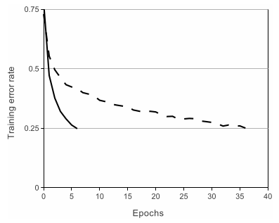
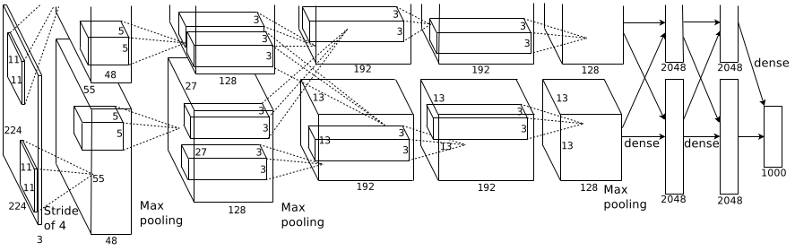
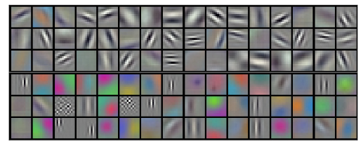
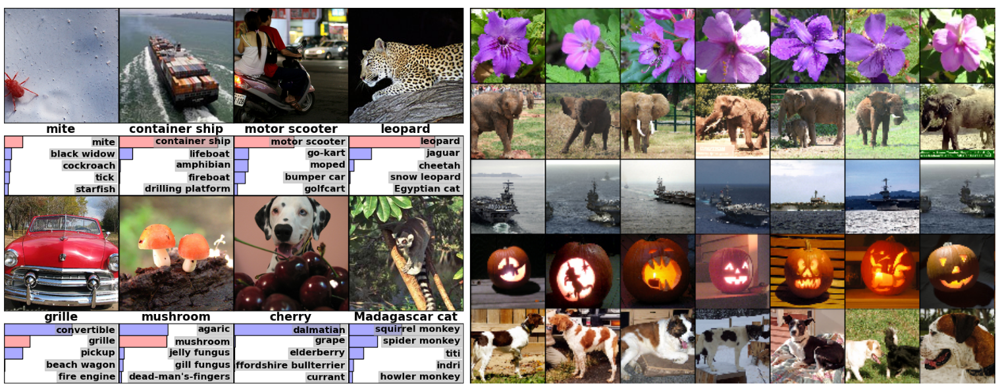

ImageNet Classification with Deep Convolutional Neural Networks
目录
论文原文: ImageNet Classification with Deep Convolutional Neural Networks
Abstract
本文针对 ImageNet LSVRC-20101挑战赛设计和开发的卷积神经网络.在测试数据集上 top-1 和 top-5 的错误率为 37.5%和 17.0%.整个神经网络由 5 个卷积层,有一些卷积层后跟 着最大池化层,跟着 3 层全链接层,最终为 1000 分类的 softmax 层,总共有 60M 参数和 650K 神经元.为了加速训练,使用了非饱和激活函数的神经元和 GPU 实现的卷积操作.为了降 低全链接层的过拟合,使用了 dropout 正则化方法.并且对整个网络进行了变种,最终在 ILSVRC-2012 挑战赛中获得了错误率 top-5 为 15.3%的最好成绩.
Introduction
在 ImageNet 之前,虽然很多目标识别的算法也使用了机器学习相关方法,但是受限于数据集太 少,无法采取表征能力更强的模型,并需要采取一些正则化方法来防止模型过拟合.现在出现 了一些较大的数据集,例如 LableMe2 包含 100K 标记图像和 ImageNet1包含 15M 标记 过的高分辨率图像,包含 22K 目标类别.
为了对应百万的图像,需要发展表征能力更大的模型.但是面对正式世界中存在的目标识别任 务,即使像 ImageNet 如此大的数据集也无法使得所有类别都出现在数据集中,所以需要模型能 够借鉴一些先验知识来无偿没有见过的类别数据.卷积神经网络(CNNs)是这一类模型的代 表.卷积神经网络的表征能力由网络的深度和网络层的宽度控制,并且针对自然图像引入了假 设(不变性,局部像素依赖等).并且和相同大小的标准前向神经网络相对,CNNs 拥有较少的链 接和参数,从而使得 CNNs 更容易训练,并且理论上性能也只是稍微差一点.
虽然 CNNs 具有很多特性,并且具有很有效的局部链接结构,CNNs 面对大规模的高分辨率图像还 是非常难以训练.幸运的是,现在 GPU 和高度优化的 2D 卷积实现足够应对当前的大规模训 练集.
本论文的主要贡献如下:采用 ImageNet ILSVRC-2010 和 ILSVRC-2012 的数据集训练了一个当前 最大的卷积神经网络,并且识别精度远超过当前的模型;基于 CNDA 实现了一整套 GPU 实现的 2D 卷积库;整个网络包含了一些新的和其他不常见的特性来加速整个训练;由于整个网络具有超 大的参数数量,采取了一些正则化方法来抑制过拟合;最终网络由 5 卷积层组成,并且发现当前 的深度是非常重要的,移除任意一个卷积层都会使得识别精度急剧下降,虽然卷积层参数数量 只占整体参数的 1% 不到.
The Dataset
ImageNet 数据集由 15M 标记的高分辨率图像组成,并且有 22K 分类类别.这些图像从 Web 上 收集,并且由人工进行标注.从 2010 开始,作为 Pascal Visual Object Challenge 的一部 分,ImageNet Large-Scale Visual Recognition Challenge(ILSVRC)开始举办.ILSVRC 使用 了 ImageNet 的数据子集,1000 个分类,每个分类下 1000 张图像组成.最终有 1.2M 训练图像,50K 验证图像和 150K 测试图像.
由于当前只有 ILSVRC-2010 有测试数据集放出,所以在 ILSVRC-2010 上进行实验.并且最终使用 模型参与了 ILSVRC-2012 挑战赛.
ImageNet 的数据集中由多种分辨率图像组成,但是卷积神经网络要求输入图像的分辨率固定.所 以针对图像进行一个规定分辨率的下采样到 256*256.针对矩形图像,首先针对较短的边缩放 到 256,然后从图像中心截取 256*256 分辨率的图像.对于这些图像需要作像素均值的中心 化操作,不做任何其他处理.
The Architecture
整个神经网络结构如图-2所示,由 8 个网络层(5 个卷积层+3 个全链接层)组成.如下详细描述一 些网络结构中新奇和不太常见的特性.如下几个特性以对模型精度的影响排列.
ReLU Nonlinearity
神经元标准激活函数为 \(f(x)=tanh(x)\) 或者 \(f(x)=(1+e^{-x})^{-1}\).这些饱和非线性激 活函数在训练过程中要比非饱和非线性激活函数 \(f(x)=max(0,x)\) 要慢.参考 Nair 和 Hinton3,上述的非饱和激活函数叫做 Rectified Linear Units(ReLUs).以 ReLU 作为 激活函数的深度卷积神经网络训练要比 tanh 作为激活函数的卷积神经网络要快好几倍.如 图图-1所示,显示了具有 4 层卷积层的网络在 CIFAR-10 数据集上达到 25%错误率需要经过的迭 代次数.

图1 ReLU Vs tanh 训练
4 层卷积层的神经网络,并且以 ReLUs(实线)作为激活函数,在 CIFAR-10 训练集上达到 25%训练 错误率迭代次数要 6 倍少于相同卷积神经网络结构,但是以 tanh 作为激活函数(虚线).
Training on Multiple GPUs
GTX 580 GPU 只有 3GB 内存,限制了神经网络的大小.实验证明 1.2M 训练集足够训练一个 GPU 可以承载下的网络规模.所以本文将整个网络分成两部分,发送到两个 GPU 上进行训练.当前 GPUs 结构允许 GPU 读取和写入其他 GPU 内存,并不需要借用机器内存来作中间层,所以特别适合 夸 GPU 并行发训练.本文采取的策略是一个 GPU 存储和负担一半的网络结构和计算,并且只 在特殊几层才做数据交互,减少数据交互对训练的影响.
Local Response Normalization
ReLUs 作为激活函数并不需要对输入数据进行归一化操作来防止饱和.但是本文发现采取如下 局部响应归一化策略(local normalization scheme)会增加网络的泛化能力.记 \(a_{x,y}^{i}\) 为卷积核 i 在 (x,y) 神经元经过 ReLU 的激活值,最终归一化 激活值 \(b_{x,y}^i\) 定义如下: $$b_{x,y}^{i}=a_{x,y}^{i}/\left(k+\alpha\sum_{j=max(0,i-n/2)}^{min(N-1,i+n/2)}(a_{x,y}^{j})^2\right)^\beta$$
在相同空间位置(x,y)上对相邻的 n 个激活值进行加和归一化.常量 \(k,n,\alpha,\beta\) 为 超参,使用验证集来进行超参选择.本文采用 \(k=2,n=5,\alpha=10^{-4},\beta=0.75\). 该归 一化操作只在一些采用 ReLU 激活的网络层.
上述的归一化操作使得模型的 top-1 和 top-5 错误率减少了 1.4%和 1.2%.
Overlapping Pooling
常规的卷积神经网络中的采样层采样的神经元不重叠.本文采取 stride=2,kernel_size=3 的 重叠采样.该方法使得模型 top-1 和 top-5 错误率分别减少 0.4%和 0.3%.
Overall Architecture
本小节用来描述整个网络结构,如图-2所示.整个网络由需要训练的 8 层组成:前 5 层为卷积层, 随后的 3 层为全链接层.最后一层全链接层输出经过 1000 路的 softmax,产出对应的 1000 类别 的概率分布. 整个网络以最大化正确分类类别的概率作为损失函数.
第二,四,五层卷积层只和本 GPU 上的前一层输出有关.第三层卷积层与所有的第二层卷积层输 出有关.全链接层神经元与所有 GPU 的前一层输出有关.在第一层和第二层卷积层后执行局 部相应归一化操作.最大化采样层跟在局部相应归一化之后,并且在第五层也执行.ReLU 激活 在所有的卷积层和全链接层都执行.
第一层卷积层输入图像分辨率为 224*224*34,采取 96 个 11*11*3 的卷积操作,并且 步长为 4.第二层卷积层输入为第一层卷积层经过局部相应归一化和最大化采样后的输出值, 采取 256 个 5*5*48 的卷积操作.第三层,第四层和第五层卷积层之间链接没有夸 GPU 交互和 采样,归一化操作.第三层卷积层具有 384 个 3*3*256 的卷积核,并且输入为第二层经过最大化 和相应值归一化操作后的激活矩阵.第四层卷积层有 384 个 3*3*192 卷积核.第五层卷积层具有 256 个 2*3*192 卷积核.全链接层每层具有 4096 个神经元.

图2 AlexNet 网络结构
AlexNet 网络结构,并且显示了两个 GPU 之间的数据交互.一个 GPU 执行上半部操作,一个 GPU 执 行下半部操作.网络输入的数据维度为 150,528.随后的网络层神经元个数 为:253,440-186,624-64,896-43,264-4096-4096-1000.
Reducing Overfitting
整个卷积神经网络拥有 60M 参数.需要引入一些方法来防止模型过拟合.
Data Augmentation
最简单和最为常用抑制过拟合的方法就是对数据集进行数据增强.本文采用两种数据增强方 法,两种方法都可以经过一些简单计算直接从原图转换过来,所以不需要将这些增强数据存储 在硬盘上.
第一种数据增强方法从原图抽取图像子图,然后进行水平反转.首先从分辨率为 256*256 的原 图抽取 224*224 子图(并作水平翻转).这个方法可以增加数据 2048 倍.测试阶段,网络从原图中 抽取 5 张子图(中间图+4 个角),并且进行水平翻转(10 张图)送入网络进行预测,然后将输出的 结果进行加和平均.
第二种数据增强是在修改训练图像 RGB 通道的强度.针对 ImageNet 训练集上 RGB 像素值执行 PCA.对于每一个训练图像,叠加主成份值乘以均值为 0,方差为 0.1 的随机权值.因此,任意 RGB 图像像素 \(I_{xy} = [I_{xy}^{R},I_{xy}^{G},I_{xy}^{B}]\) 加上如下值: $$[p_{1},p_{2},p_{3}][\alpha_{1}\lambda_{1},\alpha_{2}\lambda_{2},\alpha_{3}\lambda_{3}]^{T}$$
\(p_{i}\) 和 \(\lambda_{i}\) 为 RGB 像素值 3*3 协方差矩阵的第 i 个特征向量和特征值. \(\alpha_{i}\) 为采样随机值.该方法近似捕获了自然图像的一些重要图像属性,然后使得图 像对这些图像强度的改变不敏感.top-1 错误率降低 1%.
Dropout
模型集成是一种非常有效的降低预测错误率的方法,但是模型集成由于需要训练多个模型用 于集成.由于神经网络的训练异常昂贵,所以模型集成方法不再适用.最近发展的技术叫做 *dropout*5. 通过以一定概率将神经元输出设置为 0,然后使得该神经元不参与网络的 向前传播和向后传播.所以每次训练过程中,神经网络的结构都是不同的.该种方法很有效的 减低了神经元之间的协同,一个神经元的输出无法完全依赖一个神经元的输入,使得能够整个 网络能够学习出更为健壮的特征.测试时,使用所有的神经元输出,然后乘以对应的采样概率, 获得对应的输出.可以认为是对采样的候选指数级网络结构进行求期望.
本文只对前两层全链接层采取 dropout 操作.dropout 使得网络收敛慢了两倍.
Details of learning
本文采取以 batch size 为 128 的随机梯度下降进行算法优化,动能系数设置为 0.9,权值 衰减为 0.0005.并且权值衰减对于模型非常重要,换句话说,权值衰减在模型训练过程中不光 有正则化作用:而且降低了模型的训练错误.权值更新公式为:
\begin{aligned} \nu_{i+1} & := 0.9 * \nu_{i} - 0.0005 * \epsilon * \omega_{i} - \epsilon * \left \langle \frac{\partial L}{\partial \omega} |\omega_{i} \right \rangle _{D_{i}} \\ \omega_{i+1} & := \omega_{i} + \nu_{i+1} \end{aligned}\(i\) 为迭代次数, ν 为动能变量, ε 为学习率, \(\left \langle \frac{\partial L}{\partial \omega} |\omega_{i} \right \rangle\) 为第 i 次批次 \(D_{i}\) 损失函数针 对权重 ω 的梯度.
权重值初始化以均值为 0,标准方差为 0.01 的高斯分布.第二,四,五卷积层和全链接层的偏置 初始化为 1,从而使得前期 ReLU 的输入为正,其他层的偏置设置为 0.
学习率在训练过程中,进行手动调整.如果验证集上的错误率不再降低,那么就将学习率除以 10.初始学习率设置为 0.01,然后衰减三次之后终止训练.整个网络大概需要训练 90 个训练, 大概需要 5-6 天时间.
Results
ILSVRC-2010 的训练结果如表-1所示. ILSVRC-2010 挑战赛的胜利者为使用 6 个 在不同特征上训练的 sparse-coding 模型结果求平均.最好的模型为采取 SIFT+FVs(Fisher Vectors)的两个模型结果求平均.
| Model | Top-1 | Top-5 |
|---|---|---|
| Sparse coding6 | 47.1% | 28.2% |
| SIFT+FVs7 | 45.7% | 25.7% |
| CNN | 37.5% | 17.0% |
本模型也参与了 ILSVRC-2012 挑战赛,结果如表-2所示.因为 ILSVRC-2012 的测试集还没有放 出,所以无法知道所有模型的测试集错误率.可以采用验证集上的错误率来代替测试集错误, 因为测试集上的错误率和验证集上的错误率相差不超过 0.1%.本文描述的卷积神经网络达到 了 top-5 错误率为 18.2%,如果将 5 个相似卷积神经网络的输出集成求平均,那么 top-5 的错误率 可以达到 16.4%.采取 6 个卷积层,并在 ILSVRC-2011 上进行预训练(pre-train),然后在 ILSVRC-2012 训练集上进行微调(fine-tunning),获得 top-5 错误率为 16.6%.将预训练 过的两个 CNN 和上述训练的 5 个 CNN 网络进行集成,最终的错误率可以达到 15.3%.
| Model | Top-1(val) | Top-5(val) | Top-5(test) |
|---|---|---|---|
| SIFT+FVs | - | - | 26.2% |
| 1 CNN | 40.7% | 18.2% | - |
| 5 CNNs | 38.1% | 16.4% | 16.4% |
| 1 CNN* | 39.0% | 16.6% | - |
| 7 CNNs* | 36.7% | 15.4% | 15.3% |
Qualitative Evaluations
图-3显示了第一层卷积层学习到的卷积核可视化结果.可以看到网络学习到了一些频次和边 缘学习卷积核,和一些颜色块.GPU1 上学习的大多数都和颜色不管,GPU2 上学习到的大多数和 颜色有关.这种显现和卷积核初始化无关.

图3 96 个第一层卷积层学习到的卷积核,维度为 11*11*3.上面的 48 个为 GPU1 学习到的,下面的 48 个为 GPU2 学习到的.
图-4左图显示了 8 张测试图像的 top-5 预测值.可以看到物体即使不在图像中央也可以识 别出来,例如左上图的小虫.
也可以将最后一层隐藏层的 4096-dim 的特征激活向量作为图像的描述特征.如果两个图像的 特征激活值具有相似的欧几里德距离,那么卷积神经网络认为输入图像较为近似.图-4右图显 示了 5 张测试集中的图像和对应的训练集中的 6 个欧几里德距离最近的图像.可以看到在像素 级别上的 L2 距离并不大.可以看到狗和大小的姿态都不相同.
直接使用 4096-dim 计算欧几里德距离,不是非常有效.可以在该特征上训练一个更有效的自编 码器来压缩特征.这种方法比直接在原始像素上应用自编码器要好8,因为并不是以图像 标签来学习图像抽取,而是以高维特征来学习,从而可以学习到语义特征.

左图: 8 个 2010 测试图像和对应的 5 个最有可能的标签.并且正确的标签为红色. 右 图: 5 个测试图像在第一列,其后为 6 个训练图像在最后一层隐藏层的欧几里德距离最近的 图像.
Discussion
结果上显示深度卷积网络在大规模的训练集上突破了现有模型的表现.任何卷积层的移除都 会影响最终模型的结果.例如,移除任意一个层中间卷积层,都会带来 2%的 top-1 错误率损 失.所以网络的深度是影响模型表现的关键.
Implementation
参考: https://github.com/kratzert/finetune_alexnet_with_tensorflow
#!/bin/env python # -*- coding: utf-8 -*- import tensorflow as tf import numpy as np from ImageNetClassesName import class_names class AlexNet(object): def __init__(self, x, keep_prob, num_classes): self.logit = self._build_skeleton(x, keep_prob, num_classes) self.softmax = tf.nn.softmax(self.logit) @staticmethod def _build_skeleton(x, keep_prob, num_classes): # 1st layer: Conv(W, Relu) - > LRN -> pool conv1 = AlexNet._build_conv(x, [11, 11], 96, [4, 4], groups=1, padding='VALID', name='conv1') norm1 = AlexNet._build_lrn(conv1, name="norm1") pool1 = AlexNet._build_max_pool(norm1, [3, 3], [2, 2], padding="VALID", name="pool1") pool1 = tf.Print(pool1, [pool1, pool1.get_shape()]) # 2nd layer: conv2 = AlexNet._build_conv(pool1, [5, 5], 256, [1, 1], groups=2, padding='SAME', name='conv2') norm2 = AlexNet._build_lrn(conv2, name='norm2') pool2 = AlexNet._build_max_pool(norm2, [3, 3], [2, 2], padding="VALID", name="pool2") # 3rd layer: conv3 = AlexNet._build_conv(pool2, [3, 3], 384, [1, 1], groups=1, padding="SAME", name='conv3') # 4th layer: conv4 = AlexNet._build_conv(conv3, [3, 3], 384, [1, 1], groups=2, padding="SAME", name="conv4") # 5th layer: conv5 = AlexNet._build_conv(conv4, [3, 3], 256, [1, 1], groups=2, padding='SAME', name='conv5') pool5 = AlexNet._build_max_pool(conv5, [3, 3], [2, 2], padding="VALID", name="pool5") # 6th layer: flattend = tf.layers.flatten(pool5) fc6 = AlexNet._build_fc(flattend, flattend.get_shape()[-1], 4096, name='fc6') dropout6 = AlexNet._build_dropout(fc6, keep_prob) # 7the layers fc7 = AlexNet._build_fc(dropout6, 4096, 4096, name='fc7') dropout7 = AlexNet._build_dropout(fc7, keep_prob) # 8th layers return AlexNet._build_fc(dropout7, 4096, num_classes, relu=False, name='fc8') @staticmethod def _build_conv(x, ksizes: list, nkernel: int, strides: list, name, padding: str="SAME", groups: int=1): input_channels = int(x.get_shape()[-1]) def _call_conv(x, k): return tf.nn.conv2d(x, k, strides=[1, strides[0], strides[1], 1], padding=padding) with tf.variable_scope(name) as scope: weights = tf.get_variable("weights", shape=[ksizes[0], ksizes[1], input_channels/groups, nkernel]) biases = tf.get_variable("biases", shape = [nkernel]) if groups == 1: conv = _call_conv(x, weights) else: input_groups = tf.split(axis=3, num_or_size_splits=groups, value=x) weight_groups = tf.split(axis=3, num_or_size_splits=groups, value=weights) output_groups = [_call_conv(i, k) for i, k in zip(input_groups, weight_groups)] conv = tf.concat(axis=3, values=output_groups) bias = tf.reshape(tf.nn.bias_add(conv, biases), conv.get_shape().as_list()) return tf.nn.relu(bias, name=scope.name) @staticmethod def _build_fc(x, in_num: int, out_num: int, name: str, relu: bool=True): with tf.variable_scope(name) as scope: weights = tf.get_variable("weights", shape=[in_num, out_num]) biases = tf.get_variable("biases", shape=[out_num]) act = tf.nn.xw_plus_b(x, weights, biases, name=scope.name) if relu == True: return tf.nn.relu(act) else: return act @staticmethod def _build_max_pool(x, ksizes: list, strides: list, name: str, padding: str="SAME"): return tf.nn.max_pool(x, ksize=[1, ksizes[0], ksizes[1], 1], strides=[1, strides[0], strides[1], 1], padding=padding, name=name) @staticmethod def _build_lrn(x, radius: int=2, alpha: float=1e-05, beta: float=0.75, name: str=None, bias=1.0): return tf.nn.local_response_normalization(x, depth_radius=radius, bias=bias, alpha=alpha, beta=beta, name=name) @staticmethod def _build_dropout(x, keep_prob: float): return tf.nn.dropout(x, keep_prob=keep_prob) @staticmethod def _load_weights(session, weights_path): weights_dict = np.load(weights_path, encoding='bytes').item() for op_name in weights_dict: with tf.variable_scope(op_name, reuse=True): for data in weights_dict[op_name]: # biases if len(data.shape) == 1: var = tf.get_variable('biases', trainable=False) # weights else: var = tf.get_variable('weights', trainable=False) session.run(var.assign(data))
脚注:
ImageNet LSVRC-2010 由 1.2M 图像组成,总共有 1K 目标作为训练集.初始任务就 是根据输入的图像识别出图像中包含最多的 5 个目标 \(l_{j},j=1,...,5\),每个图像都有真 实标签 \(g_{k},k=1,...,n\),针对预测的 5 个标签计算错误率: $$e=\frac{1}{n}\sum_{k}min_{j}d(l_{j},g_{k})$$ 如果对于所有类别认为权重相同,那么 \(d(x,y)=0,if\ x=y\ and\ 1\ otherwise\).
Labelme: a database and web-based tool for image annotation
Rectified linear units improve restricted boltzmann machines
其实输入的数据应该为 227*227*3,卷积操作后才能输出 55*55*96 的激活矩阵.
Improving neural networks by preventing co-adaptation of feature detectors
Large scale visual recognition challenge 2010
High-dimensional signature compression for large-scale image classification
Using very deep autoencoders for content-based image retrieval